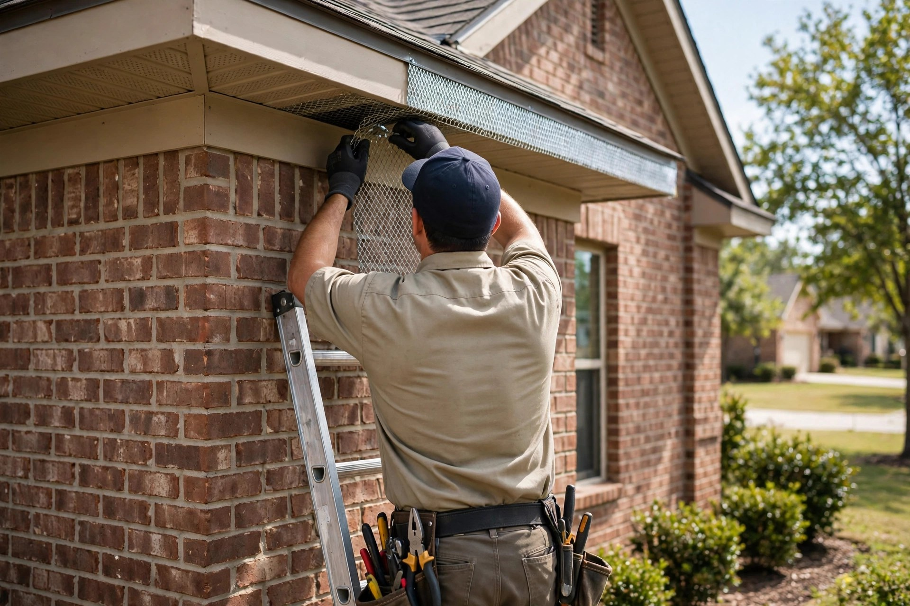

Fort Worth's local rodent control crew - inspections, rat and mouse removal, attic sealing and bait stations across Tarrant County since 2010, with every quote in writing.
What We Do
- Rodent Inspection
- Rat Control
- Mouse Extermination
- Bait Station Installation
- Attic Sealing
- Garage Rodent Control
Areas We Serve
Fort Worth, Fairmount, Ryan Place, TCU Area, Ridglea, Wedgwood, Benbrook, Westover Hills, Arlington Heights and greater Tarrant County.
TPCL Licensed - Locally Owned Since 2010 - Same-Day Service - Written Quotes - Up to 5-Year Warranty on Premium Care.
Bait Station Safety Around Kids and Pets: A Fort Worth Guide
The first question Fort Worth parents ask about bait stations is the right one: can my kids or my dog get into this? Modern professional stations are engineered around exactly that worry - and understanding how they work turns a vague concern into a clear decision.

A professional bait station is a locked, tamper-resistant box, anchored or weighted, with an internal labyrinth that lets a rodent reach the bait block while keeping fingers and paws out. The bait itself is secured on rods inside - it cannot be shaken out or carried off, which also means no loose bait scattered in the yard for a pet to find. Stations are placed on rodent travel lines along fences and foundations, not in play areas, and every station is mapped and recorded at each service visit.
Why the lock and the labyrinth matter
Children explore with their hands and dogs explore with their mouths, so a station has to defeat both. The lid needs a key or a tool to open - a curious toddler cannot pop it, and a determined terrier cannot chew through the heavy-gauge plastic quickly enough to reach anything before an owner intervenes. Inside, the passage turns corners a rodent's flexible body handles easily but a paw or a small hand cannot follow. That geometry, not the poison, is the real safety system: the bait never leaves the box, and nothing that should stay out can reach in.
Placement does the rest of the work. A TPCL-licensed technician sets stations where rodents already travel - along the foundation, behind the AC unit, beside the fence line, near the garage door corners - and deliberately away from play sets, dog runs and garden beds. Each station is numbered and its location drawn on a service map, so nothing is ever forgotten in a corner of the yard and every visit starts with an inspection of every box.

The honest comparison: stations vs loose bait
The honest comparison is with the alternative. Loose poison bought at a hardware store is the genuinely dangerous option - unsecured, unmapped and unaccountable. Pellets get scattered by the handful into attics and garages, mice carry them into wall voids and drop them where pets vacuum them up, and nobody records how much went where. A locked station program is the controlled version of the same tool, with the feeding data to prove it is working and the option to switch to trap-only monitoring once pressure drops.
That feeding data matters more than most homeowners expect. A station that is suddenly empty tells the technician the population is still active; a station that stays full for two visits running says the pressure is gone and the program can step down. It turns rodent control from guesswork into a record - and it is the same record that protects a family, because it shows exactly how much bait is on the property, in which locked box, checked on which date.
What about secondary risk to pets and wildlife?
The other fair question is secondary exposure: if a rat eats bait and a dog or an owl catches the rat, is the predator poisoned too? Modern professional baits are formulated and dosed with this in mind, and the secured-block format means a rodent cannot hoard a pile of it in one place. The bigger protection is program design - stations are one tool inside a plan that leans on exclusion first. Sealing the roofline, the weep holes and the garage door gap removes the food-and-shelter equation that keeps rodents around a home, so bait use drops over time instead of becoming permanent. Yards in Wedgwood, Ridglea and the TCU area that start with heavy station activity usually step down to monitoring within a season once the entry points are closed.

Questions to ask any provider
Ask any provider two questions: are the stations locked and anchored, and will I see the service records? Yes to both is what professional looks like. Add two more while you are at it: where exactly will the stations sit on my property, and what is the plan to reduce bait use over time through sealing and trapping? A company that answers all four plainly - and puts the quote in writing - is treating your yard the way it should be treated: as a home first and a job second.
Related reading: pet-safe bait stations homeowner's guide to rodent control.